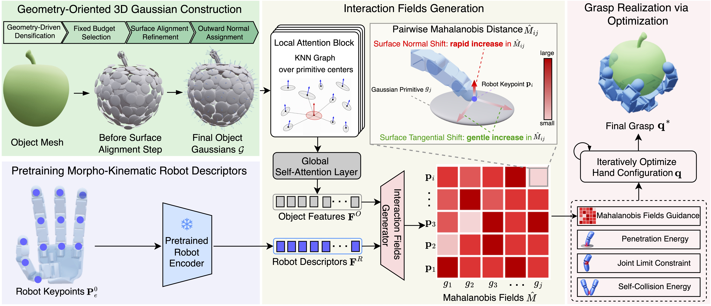

MANGO-Grasp: Mahalanobis Fields over Geometry-Oriented 3D Gaussians for Cross-Embodiment Dexterous Grasping
Video
Abstract
Cross-embodiment dexterous grasping aims to synthesize stable grasps across heterogeneous multi-fingered hands with little or no embodiment-specific tuning. Existing interaction-centric methods achieve promising results, but their object representations often underrepresent local surface geometry, while their robot descriptors do not explicitly encode both robot morphology and kinematics. We propose MANGO-Grasp, an anisotropic interaction framework that represents objects as geometry-oriented 3D Gaussian primitives and robot hands as surface keypoints encoded into morpho-kinematic descriptors. The object primitives are adaptively allocated by geometric complexity and shaped as surface-aligned plates with outward normals, encoding local geometry. Mahalanobis fields over keypoint-primitive pairs serve as interaction prediction targets during training and as optimization guidance for grasp realization at inference. These fields rise sharply for displacement along the surface normal but only gently within the tangent plane, matching the directional structure of contact. Grasps are realized with one shared optimization formulation and hyperparameter setting across all embodiments. On the CMAP and MultiGripperGrasp benchmarks, MANGO-Grasp outperforms the strongest seen-hand baseline by up to 8.24 percentage points in simulation. It also transfers zero-shot to the unseen SharpaWave hand, improving over the strongest zero-shot baseline by up to 16.57 percentage points, and achieves 86% success in real-world experiments.
Method Overview

Method overview. The object mesh is converted into a fixed-budget set of surface-aligned, plate-like 3D Gaussian primitives with outward normals. The primitives are then encoded by a stack of local attention blocks, operating on a KNN graph built over primitive centers, followed by global self-attention layers, yielding Object Features. In parallel, initial robot keypoints are encoded by a pretrained robot encoder into morpho-kinematic Robot Descriptors. The Interaction Fields Generator fuses both streams to generate the Mahalanobis fields, which encode the interaction between each robot keypoint and each object primitive: the field value rises rapidly along the surface-normal direction and varies gently within the local tangent plane. The predicted fields then guide optimization from to the final grasp under joint-limit constraints, penetration energy, and self-collision energy.
Real World Demos
Apple
Chips Can
Coke Can
Ketchup Bottle
Rugby Ball
Salt Box
Tomato Soup Can
Scrub Sponge
Spam Can
Toothpaste Box
Real World Experiment Results
| Object | Success/Trials | Success Rate (%) |
|---|---|---|
| Apple | 6/10 | 60 |
| Tomato Soup Can | 10/10 | 100 |
| Rugby Ball | 9/10 | 90 |
| Spam Can | 8/10 | 80 |
| Ketchup Bottle | 8/10 | 80 |
| Toothpaste Box | 10/10 | 100 |
| Chips Can | 8/10 | 80 |
| Coke Can | 8/10 | 80 |
| Salt Box | 9/10 | 90 |
| Scrub Sponge | 10/10 | 100 |
| Average | 86/100 | 86 |
BibTeX
TBD